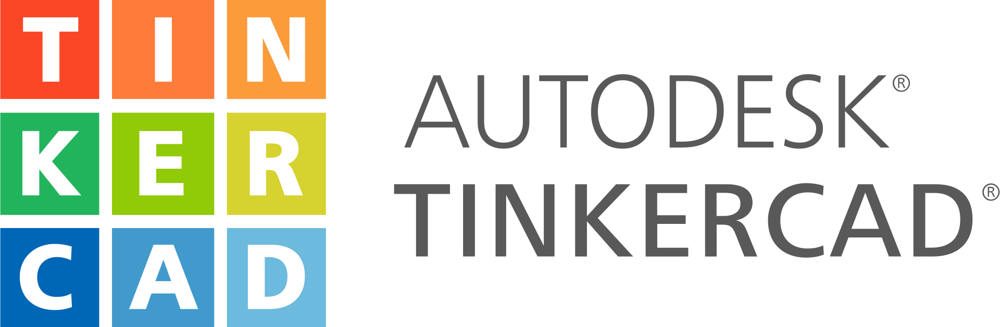

Proyectos
Juego en Unity - Plataforma 2D
Juego en Unity con C# con detección de colisiones, movimiento, diálogo y recogida de objetos. Inspirado en juegos clásicos de plataformas.
Arduino - Camión que no se choca
Proyecto desarrollado con Arduino Uno, utilizando sensores de proximidad para detectar obstáculos. Al detectar un objeto, se enciende un LED, suena un buzzer y el motor se detiene.
Tecnologías utilizadas: Tinkercad, C++, Arduino IDE
Componentes: Buzzer, sensor de proximidad, LEDs, motores de aficionado, Arduino Uno
Stop Motion con cubos de Rubik
Video creativo realizado para un concurso de GANCube, usando técnicas de stop motion con mis cubos de Rubik.
Herramientas: Cámara de celular, edición básica de video
Lenguajes de programación que manejo:
-
C#

-
Python

-
C++ (Arduino)

Herramientas y tecnologías que utilizo:
-
Unity

-
Arduino IDE

-
Visual Studio Code

- Tinkercad 
-
Scratch